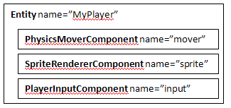

The PushButton Engine lets you build games quickly by breaking functionality down into components. Because components are focused and implement a consistent interface, it is easy to make new functionality by combining them. This chapter discusses why components are desirable, how to write components, and how to distribute them.
Components are an important piece of the puzzle but hardly the whole thing! Other chapters in this manual describe the resource manager, XML level format, and other important parts of the engine.
Components are a better way to develop games. They avoid the major problems that come from inheritance-based implementations. Games that are made with components are naturally more modular, maintainable, and extensible. Many design decisions in PBEngine were made to encourage this approach.
The first major game to use components and publish about it was Dungeon Siege (Gas Powered Games, 2002). "A Data-Driven Game Object System" was presented at GDC that year, and gives a thorough discussion of the system they used. The major benefit was that they avoided a complex object hierarchy and were able to manage a very large, complex game world in a "flat" way. They ended up with 21 C++ components, 148 script-based components, and around 10,000 object types.
Their C++ components were things like "actor", "conversation", "follower", "physics" and so forth. The 148 script components were much more game specific, implementing things like logic for traps and puzzles, movement for elevators, quest tracking, etc. They were able to focus most of their time on moving the game forward rather than focusing on infrastructure, and adding a new feature was quick.
The Dungeon Siege experience is very instructive. They avoided tangled object hierarchies and managed to deliver a complex, compelling game world. Since then, a similar component architecture has been used in other games and middlewares, most notably Unity, TorqueX, and Gamebryo.
A game object is represented as an IEntity that contains a list of one or more IEntityComponents. For instance, a player entity built from components might look like this:
As you can see, each component is named, as is the entity. It's straightforward to imagine how the data might flow in this example - mover maintains the position of the object and updates its physical state as time advances. When sprite needs to render, it gets position data from mover. input applies forces to mover so that the player character moves based on the user's actions.
Creating a new type of component is easy. Here is a minimal component:
class SimplestComponent extends EntityComponent
{
}
Notice that we use the convention of appending Component to the name of every class that is usable as a component (ie, that extends EntityComponent or implements IEntityComponent). This makes it easy to spot components.
Several methods are available for you to optionally override. The EntityComponent API docs explain fully, but the following example shows a minimal component that overrides them, with comments briefly explaining when and why they are called.
class SimplerComponent extends EntityComponent
{
protected override function onAdd():void
{
// Let superclass initialize, too.
super.onAdd();
// Initialize resources.
// This will be called when the component is added to an entity.
}
protected override function onReset():void
{
// Let superclass reset, too.
super.onReset();
// (Re)acquire references to components inside the same entity.
// This will be called after onAdd, whenever another component
// is added or removed from the owning entity.
}
protected override function onRemove():void
{
// Let superclass remove, too.
super.onRemove();
// Release resources and references.
// Called when the component is removed from its entity, usually
// as part of the entity's destruction.
}
}
A note on how components are initialized by the deserializer: First all properties are set, some of them more than once if there are multiple templates (more on that in the XML Format chapter). Then, onAdd() is called for all the components in unspecified order. Finally, onReset() is called for each component in unspecified order, to give it a chance to gather references to other components.
There are three ways for components to interact: properties, events, or interfaces. All of them are based on query methods on IEntity. If you are writing code in a component, the owner member will return a reference to the IEntity that contains that component.
These approaches work very similarly whether you are accessing components on another entity or on your owner. The only difference is that instead of using owner, you will use the NameManager or another means to look up an IEntity.
The best way to share data amongst components is via properties. Properties are good because they don't require any compile-time dependencies between components - in fact, it's easy to reconfigure how data is accessed, allowing components to be used in unanticipated ways. They're great for sharing position, velocity, color, health, and any other kind of data.
Adding a property to a component is as easy as adding a new member variable. Accessing properties is done using simple strings that specify what field on what component should be read or written. Here's a quick example of how this looks:
class TestComponent extends EntityComponent
{
public var aProperty:String = "Hello!";
}
// Inside another component on an entity which has a TestComponent named Test:
var value:String = owner.getProperty(new PropertyReference("@Test.aProperty")) as String;
Logger.print(this, value); // Outputs "Hello!"
You can also access fields inside complex data types. Suppose aProperty were a Point. You could do the following:
var xPosition:Number = owner.getProperty(new PropertyReference("@Test.aProperty.x");
In fact, you can access any member contained in another component. The only other thing to know is that to access items in Arrays or Dictionaries, you use the same dot syntax:
// Equivalent to accessing anArray[4].x on @Test.
var xPosition:Number = owner.getProperty(new PropertyReference("@Test.anArray.4.x"));
The property system respects getters and setters, so if you need side effects when you set or get a field, you can implement this quite naturally.
What is the purpose of the PropertyReference type? It makes it simple to configure where a component looks to get a property. Consider this:
class TestComponent extends EntityComponent
{
public var PositionProperty:PropertyReference = new PropertyReference("@Spatial.position");
public function DoSomeBehavior():void
{
var myPos:Point = owner.getProperty(PositionProperty) as Point;
}
}
If you need to get your position from some other component, it's very easy to reconfigure TestComponent. In addition, you are saving the overhead of creating a new PropertyReference every time you request the property. Once all the data inputs and outputs for a component are configurable, it's much easier to use components in unexpected situations.
Every IEntity exposes a standard Flash eventDispatcher, so it's easy to dispatch and listen for events. Events make a lot of sense for one-shot scenarios, like detecting when a player jumps, responding to collision events, detecting damage, state machine transitions, and so forth.
// Example of dispatching an event from a component.
class TestComponent extends EntityComponent
{
// Declare identifier for the event.
static public const SOME_ACTION:String = "SomeAction";
public function SomeActionHappens():void
{
owner.eventDispatcher.dispatchEvent(new Event(SOME_ACTION));
}
}
// Example of listening for an event in a component.
class TestListenerComponent extends EntityComponent
{
protected function onAdd():void
{
owner.eventDispatcher.addEventListener(TestComponent.SOME_ACTION, _EventHandler);
}
private function _EventHandler(e:Event):void
{
trace("Got an event!");
}
protected function onRemove():void
{
// Notice that we have to unsubscribe the event when the component
// is removed.
owner.eventDispatcher.removeEventListener(TestComponent.SOME_ACTION, _EventHandler);
}
}
If all else fails, you can directly access another component, either using a common interface or directly. This is the least desirable option, because it introduces compile-time dependencies. Compile-time dependencies are a big problem, because they can make it very difficult to use components from different packages. It's better to use events or properties, as they work entirely by name and do not assume that certain interfaces or parent classes are present.
However, it can give better performance, and it can make sense in some situations. For instance, in our player example above, using an interface might make sense for the input component to use to apply forces to the mover.
There are three methods to directly access a component in an entity. Use owner for your own entity, or lookup and use another entity to get components from somewhere else. The methods:
Here's a simple example of directly accessing another component:
// Interface implemented by another component.
interface IExampleInterface
{
function getBigArray():Array;
}
class TestComponent extends EntityComponent
{
public otherComponentName:String = "anotherComponent";
public function AccessSomeData():void
{
var otherItem:IExampleInterface = owner.lookupComponentByName(otherComponentName, IExampleInterface) as IExampleInterface;
for each(var i:* in otherItem.getBigArray())
trace(i);
}
}
These functions are cheap, and calling them once a tick won't slow anything down. However, if you do need to store a permanent reference to a component, make sure to clear and re-establish it when onReset() is called. Otherwise, you may access stale data or cause a memory leak.
// Just like the previous component, but it keeps the reference around longer.
class TestComponent extends EntityComponent
{
public var anotherComponent:IExampleInterface;
protected function onAdd():void
{
super.onAdd();
anotherComponent = owner.LookupComponentByType(IExampleInterface) as IExampleInterface;
}
protected function onReset():void
{
super.onReset();
anotherComponent = owner.LookupComponentByType(IExampleInterface) as IExampleInterface;
}
protected function onRemove():void
{
super.onRemove();
// Don't forget to clear the reference to prevent memory leaks.
anotherComponent = null;
}
public function DoSomething():void
{
for each(var i:* in anotherComponent.getBigArray())
Logger.print(this, i);
}
}
When you are using components that are only mentioned in level files, the Flex compiler won't know they are being used and may remove them. To prevent this, use the helper function PBE.registerType. For example:
PBE.registerType(com.pblabs.rendering2D.DisplayObjectRenderer);
Components are simple AS3 classes, so packaging them is easy. We recommend compiling them into a SWC, so that sharing them is as easy as dropping a file into your library path.
To facilitate this, components should be grouped into packages for easy redistribution. For instance, in Grunts (an isometric tower defense game), the isometric renderer and the pathfinder are in separate packages from the game. Because of this they are much easier to copy around and reuse. If desired, we can even compile (for example) just the pathfinder into a SWC and share it.